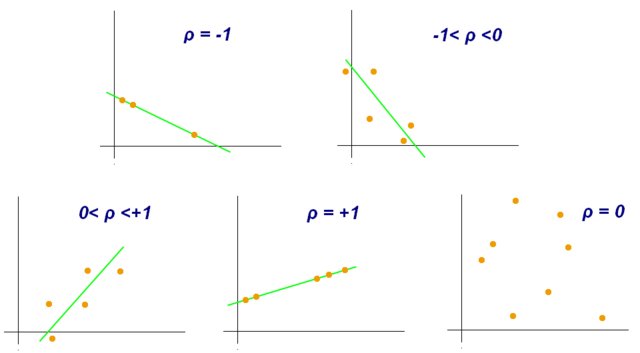

Turning Messy Data into Insights
A case study on American Domestic Flight Data
Oliver Zeigermann / @DJCordhose
- Talk as PDF until Fri 13th
- add screenshots from Kibana Dashboard
- add unsupervised learning results from notebook
- add locations as lat lon in import?
- resolve using airports_geo_data.csv over Origin and Destination

A journey through exploring all domestic US flights
from 2000 to 2002
The raw data (per year)
approx. 6 million data sets
> wc -l 2001.csv
5967781 2001.csv
approx. 600 MB of data
> ls -hl 2001.csv
573M Jan 10 2016 2001.csv
29 colums, data has gaps, but looks consistent
> head 2001.csv
Year,Month,DayofMonth,DayOfWeek,DepTime,CRSDepTime,ArrTime,CRSArrTime,UniqueCarrier,FlightNum,TailNum,ActualElapsedTime,CRSElapsedTime,AirTime,ArrDelay,DepDelay,Origin,Dest,Distance,TaxiIn,TaxiOut,Cancelled,CancellationCode,Diverted,CarrierDelay,WeatherDelay,NASDelay,SecurityDelay,LateAircraftDelay
2001,1,17,3,1806,1810,1931,1934,US,375,N700��,85,84,60,-3,-4,BWI,CLT,361,5,20,0,NA,0,NA,NA,NA,NA,NA
2001,1,18,4,1805,1810,1938,1934,US,375,N713��,93,84,64,4,-5,BWI,CLT,361,9,20,0,NA,0,NA,NA,NA,NA,NA
2001,1,19,5,1821,1810,1957,1934,US,375,N702��,96,84,80,23,11,BWI,CLT,361,6,10,0,NA,0,NA,NA,NA,NA,NA
2001,1,20,6,1807,1810,1944,1934,US,375,N701��,97,84,66,10,-3,BWI,CLT,361,4,27,0,NA,0,NA,NA,NA,NA,NANo specific task or question
Exploring what just might be interesting
Finding the unknown unknowns
Why not just load it into Excel and wing it?
- Excel (2011 Mac): truncates
- loads data relatively fast
- truncates after 1M lines
- Google Sheets: nope
- limited to 2.000.000 cells (not lines)
- does not load data at all
- Numbers (Mac): truncates
- loading takes long
- truncates after 64k lines
- Emacs: Low-level operations possible
- very fast and almost no memory overhead
- just a text editor
Challenge
Handling large amounts of data while maintaining the interactivity and the intuitive UI
Like: benefits of Excel and Access at the same time

The Journey
Making sense of the data step by step
All software shown here is Open Source and Free of Charge
Step I: Statistical pre-analysis to learn about data
Caution: Preparing and even collecting data already is interpretation
- What is the nature of the data (e.g. time series data)?
- Does the data look plausible?
- What visualizations seem most promising?
Correlations (r)

Interesting: Distance / Origin to Unique Carrier
Pearson's r: Linear Correlation
Pearson's r is a measure of the degree of linear(!) dependence between two variables
By Kiatdd - Own work, CC BY-SA 3.0, https://commons.wikimedia.org/w/index.php?curid=37108966
Need to look at the individual figures
Arrival Time to Departure Time

Pearson's r: 0.77, plausible but trivial
Origin to Unique Carrier

Origin to Unique Carrier
4 = (DL) Delta
Distance to Unique Carrier

Distance to Unique Carrier

1 = AQ (Aloha Airlines)
Unsupervised Machine Learning can also help

What do you mean by Machine Learning? http://www.techjini.com/blog/machine-learning/
Results of Analysis
- A really large set of data
- Data looks plausible
- Many missing values
- Contains obvious correlations
- But also contains non-trivial correlations
- Has timestamps
- Storing and analysing as time series data sounds promising
Bottom line: not an easy, but interesting data set
Step II: Interactively Exploration
Loading all the data into a database and query it interactively
Your #data from another perspective with #dataviz

https://twitter.com/Creatuluw/status/749151998415634432
https://twitter.com/planetepics/status/914792139309150208
Checking time series data for the first time
using Kibana adhoc queries

Demo: filter for 'Cancelled:false'
Interactive Dashboards also possible
Kibana
- generic frontend for Elasticsearch
- browser based
- allows for dashboards
- also allows to make arbitrary adhoc queries
Step III: Data Exploration Examples
Coming back to questions from analysis in first and second part
This requires domain knowledge and interpretation
What is the recurring dent in the histogram?
What are the origins of Delta flights to STL (St Louis)? Why?
Why only short flight distances for Carrier Aloha Airlines (AQ)?
Answer

Aloha Airlines (AQ) mainly flies between Hawaii and West Coast (California/Nevada)
What is the prominent Origin for Carrier Delta (DL)?
Answer

Delta (DL) mainly flies from Atlanta (ATL) its headquarter and largest hub
Tools Used
There are many tools for these task, you can choose others
- Basic Processing: UNIX tools
- Cleaning and Import: Dask (Python)
- Statistical pre-analysis: Pandas (Python)
- Display and Interactive Filtering: Elasticsearch and Kibana
Wrapup
- Statistic Analysis on Samle Code can give first insights
- Exploring Data Interactively lets you find most interesting relationships
- Unsupervised Machine Learning can find more interesting details
- Answering the "why" involves domain knowledge and interpretation
- Interactive, visual experiments also help with interpretation of data
- Interpretation and understanding is the prerequisite to action
Slides: http://bit.ly/data-insights-ml-101
Ping me for questions / help / comments: http://zeigermann.eu / @DJCordhose